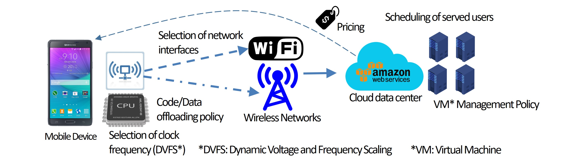

Research
Dynamic MEC-Assisted On-device AI
As a deep learning technology becomes advanced, mobile vision services such as augmented reality or autonomous vehicles are prevalent. The performance of such services can vary with respect to the computing capability of different mobile devices, dynamic service requests and mobile/network environment, and the type of learning models. Existing studies have independently optimized such mobile resource allocation and the design of the learning model for given other side of parameters. We study joint optimization of learning model and process/network resources adapting to dynamic systems. The developed algorithms are evaluated by various experiments using Embedded AI board (e.g., NVIDIA Jetson, Xavier) and Smartphones.
Reference Papers
Dynamic Code/Data Offloading in SDN/NFV-based Cloud Computing Architecture

According to Forbes, over 80% of entire enterprise workloads will be in the cloud by 2020. Cloud computing is of utmost importance in future 5G+/6G network systems. We aim at developing essential technologies in cloud computing network architecture: code and data offloading policies using computing and networking resources. The policies can be developed by various optimization techniques and AI-based algorithms (e.g., deep Learning and reinforcement learning). Moreover, the developed algorithms are evaluated by simulations (e.g., using MATLAB) or experiments (e.g., using smartphones and Amazon Web Service (AWS)).
Reference Papers
Elastic Content Caching in Edge Computing Architecture
According to Cisco, mobile video traffic will account for more than 80% of total mobile traffic by 2022. These traffic can be significantly alleviated by proper edge caching at world-widely distributed cloud servers. Content Providers (CPs) without CDN servers can rent cache space as needed at different cloud locations from cloud service providers (CSP) such as AWS in order to enhance their offered quality of service (QoS). We addresses key challenges in this context, namely how to invest an available budget in cache space to match spatio-temporal fluctuations of contents demand, wireless environment and storage price. To estimate popularity of each content file, we exploit not only big data and machine learning paradigm but also optimization techniques. Content caching system can be developed by physical servers in the lab and virtual servers rented by cloud service providers, e.g., AWS.
Reference Papers
LEO Satellite Communications/Networks and Satellite Edge Computing for 6G
Space X's Starlink now can provide world-wide high-speed Internet services including air, ocean and desert thanks to low propagation latency of low earth orbit (LEO). On top of this LEO environment, we are designing a satellite edge computing architecture and developing dynamic resource management algorithms.
Reference Papers
Radio Resource Management for 5G/6G Communications

5G/6G communications support various types of applications which ask different network bandwidth and latency requirements. We aim at developing key radio resource management techniques in 5G communications such as network slicing, beam activation, power control and user scheduling in CoMP (Coordinated MultiPoint) environment. Robust and convex optimization tools are used to design these techniques.